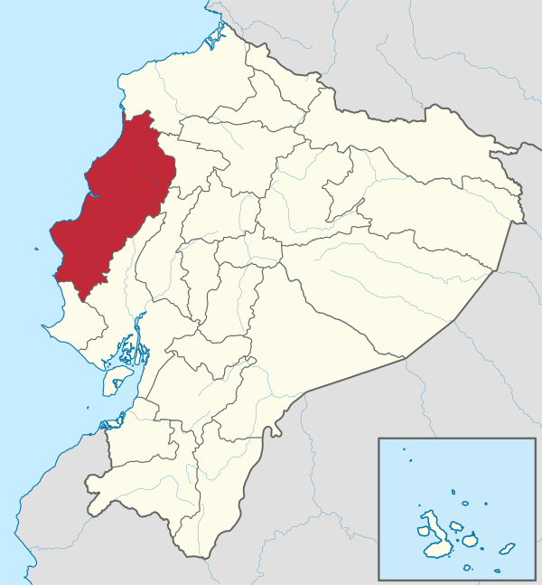

Su capital administrativa es la ciudad de Portoviejo. Ocupa un territorio de unos 19.427 km², siendo la cuarta provincia del país por extensión, detrás de Pastaza, Morona Santiago y Orellana.
Además del territorio continental, pertenecen a la jurisdicción de la provincia la Isla de la Plata y la Isla Salango. Limita al norte con Esmeraldas, por el este con Santo Domingo de los Tsáchilas y Los Ríos, al sur con Santa Elena, al este y al sur con Guayas y al oeste con el océano Pacífico a lo largo de una franja marítima de unos 350 kilómetros.
En el territorio manabita habitan 1'562.079 personas, según la proyección demográfica del INEC para 2020, siendo la tercera provincia más poblada del país después de Guayas y Pichincha.
La Provincia de Manabí está constituida por 22 cantones, con sus respectivas parroquias urbanas y rurales.
Es uno de los más importantes centros administrativos, económicos, financieros y comerciales del Ecuador.
Las actividades principales de la provincia son el comercio, la ganadería, la industria y la pesca ya que se encuentra el segundo puerto más importante del país y las mayores fábricas de atún en Manta, el sector agropecuario en la vida rural; y, el turismo, principalmente en sus extensas playas.
Tuvo distintos períodos migratorios provenientes de varias zonas como los Caras y los Mantas.
La colonización española se dio 1534 cuando Pedro de Alvarado exploró la zona y en 1535, año en que Francisco Pacheco fundó la ciudad de Portoviejo y antes de realizarla hizo un largo recorrido de exploración en sus costas adyacentes.
Durante ese período la entidad máxima y precursora de la provincia sería el Gobierno de Caráquez, después de la guerra independentista y la anexión de Ecuador a la Gran Colombia, se crea Manabí el 25 de junio de 1824, lo que la hace una de las 7 primeras provincias del Ecuador. 